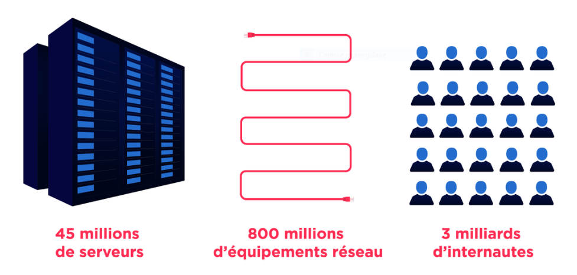

L'informatique est-elle verte ?
Ce site internet créé par Guillaume Juan n'a pas pour but de valoriser un point de vue mais d'en partager les différents aspects . Il est également relié avec les deux pages suivantes :
⚠ Il risque d'y avoir des répétitions dans les informations ⚠
Avant de commencer que sait-on du concept de la pollution numérique :
La pollution numérique aussi appelée la pollution digitale, encore trop peu connue du grand
public, est un phénomène pourtant bien réel aussi dévastateur que la pollution aérienne civile.
La pollution digitale ou numérique désigne la pollution engendrée par toutes les nouvelles
technologies et elle se divise en deux axes :
Véritable système nerveux de l’économie mondiale et système social à part entière, le web engloutit des quantités considérables d’énergie.
Bien que l’on dise qu’Internet soit dématérialisé, celui-ci possède pourtant une infrastructure, elle bien réelle et matérielle, qui a un effet physique négatif sur notre planète.
En effet, tout un ensemble de câbles, antennes, data centers et beaucoup d’autres, permettent le fonctionnement d’Internet et du « cloud » qui permet le rangement, le partage, la protection de nos données.
Si Internet était un pays, ce serait la sixième nation la plus polluante du monde !
| Informatique et science du numérique, un impact sur l'écologie ? | Ce que l'on en pense : |
| Il faut avant tout savoir qu’est ce qui pollue ? | Sais-tu qu’en faisant une simple recherche sur internet, tu pollues ?
En appuyant simplement sur le bouton « Rechercher » de Google, nous émettons l’équivalent de 5 à 7 grammes de CO². De même qu’en envoyant un mail avec ou sans pièce-jointe ? Envoyer un simple mail rejette 10 grammes de CO² soit l’équivalent de ce que peut absorber un arbre en une journée et plus une pièce jointe est volumineuse plus cela pollue. L’envoi d’un seul e-mail d’un mégaoctet équivaut à la consommation électrique d’un ordinateur en veille pendant plus de 8 heures ! Imaginez cela à l’échelle mondiale, chaque clic, chaque mail (courriel) envoyé, chaque recherche faite sur la toile, chaque musique, vidéo écoutée via un service de streaming ou même l’utilisation d’un objet connecté, induisent un coût non-négligeable en terme de pollution. L’utilisation d’une heure d’Internet à l’échelle mondiale équivaut à la consommation de 4000 tonnes de pétrole soit 4000 allers-retours Paris, New-York en avion! |
| Que peut-on en bénéficier ? | CleanFox ou encore Newmanity sont des logiciels qui visent en but commun de pouvoir trier
sa boite mail très rapidement en permettant aussi de réduire l'impact écologique de ces messages :
- Par exemple, si tu connais la page sur laquelle tu souhaites aller, vas-y directement (via des favoris par exemple) et non en passant par la page d’un moteur de recherche. - Il faut donc privilégier le chemin le plus court pour éviter de créer du trafic et de faire travailler les « data centers ». - Eviter d’ouvrir plusieurs onglets à la fois car cela est très consommateur d’énergie. - Lutter contre les spams permet aussi de limiter l’empreinte carbone, ils représentent 9 courriels sur 10. - Changer de moteur de recherche. D’accord, Google est simple, efficace et le plus connu, mais certains autres moteurs de recherches comme Lilo, sont plus conscients des problèmes environnementaux et reversent une partie de leurs revenus publicitaires à des projets écologiques et durables. |
| Comment définir rapidement le numérique en shémas ? |  |
| Sinon voici quelques conseils pour diminuer cette pollution . | |
|
Diminuer l'impact de ses mails :
Oui, chaque email envoyé génère en moyenne 19g de CO2, à cause de l'envoi et du stockage de ces mails dans le cloud et les data center (lieux de stockage de gros serveurs).
|
Pour en débattre aller à : Page Internet 3 |
| Devenir un maître :
Je sais que ça a l'air compliqué dit comme ça, mais le E-cleaning, c'est juste un joli mot pour parler du fait de trier sa boîte mail ! En triant tes mails régulièrement, tu pourras faire un geste pour la planète facilement et rapidement. Une fois que tu t'es désabonné de toutes les newsletter que tu ne lis pas, tu peux aussi :
|
|
Pour plus d'information aller voir les autres sites mis à disposition .